04_OpenDRIVE Visualization with Open Source Software esmini_原文
2026年05月15日 14:24
Using open source software. So what do we need for that? We definitely need a text editor. In our case, we will use Vs Code. We need Es menu, which is a open source, open scenario player, which comes with a few handy open drive tools. The GitHub link you can see below, and we need Python, and that's pretty much it.
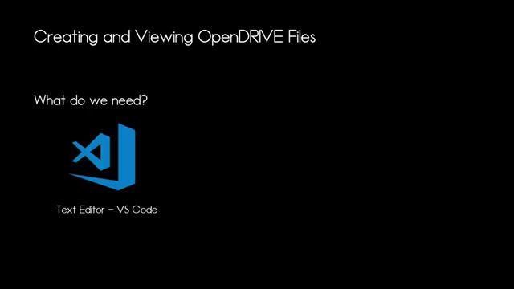
So what will we create today? We will definitely create a single straight road, which is very, very simple. So as you can see in the image here, 100 m long, straight reference line, 2 lanes, and a sidewalk on each side, we will create a single road with a bend and we will create several roads connected to each other to form in sort of S shape. So what do we need to know to do that? And I've created a few videos with the relevant information. I will link them below in the description.
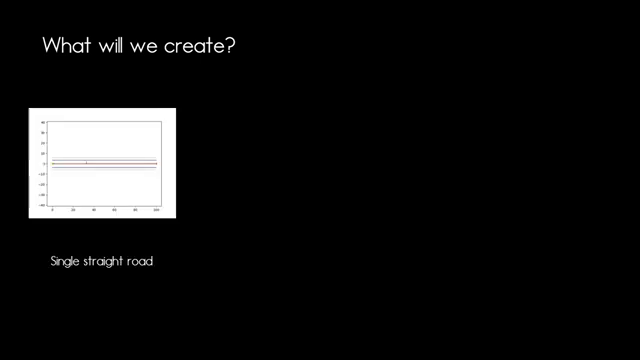
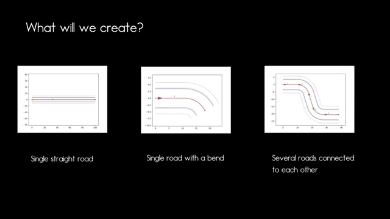
One is about the reference line, then you will need to know how to define lanes and you need to know how to define roads And with this, we can jump directly into it.
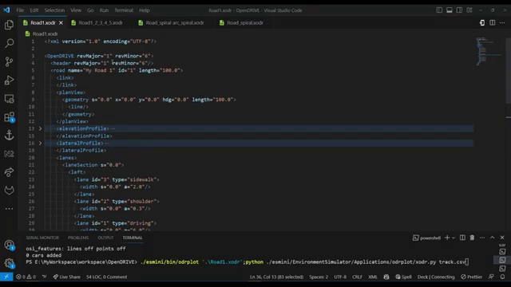
Okay, so let's start by creating our first open drive of XML. So we can take any example from the open drives specification that you will find in the samples folder where we start out with a open drive element, we define a header. We can start with the first row definition. In this example, we'll just have a single road. Now we struggle with the plan view. And as we want to define a straight line with a length of 100 m, our geometry element will be of the same length as the entire road. So that is really simple.
For simplicity purposes, we won't apply any elevation or lateral profile, but we will define a few lanes. So we will have a single lane section for the entire road. Then in the left section, we have a driving lane with the ID 1, a shoulder lane with the ID 2, and a sidewalk with the ID 3. Our driving lane here we will define as 3.5 m. Then our shoulder is 30 cm and the sidewalk has a width of 2 m. Our center lane has a broke road mark, so we can define on the center lane a road mark, which then spreads equally to the left and right side. As the center lane has a width of 0 and we have the same driving shoulder and sidewalk configuration on the right side.
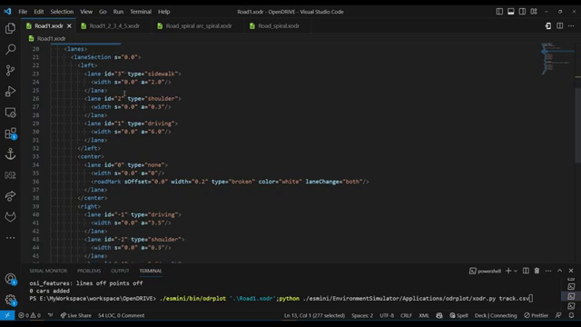
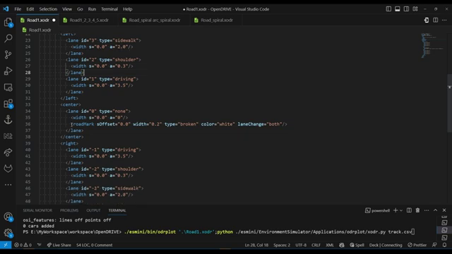
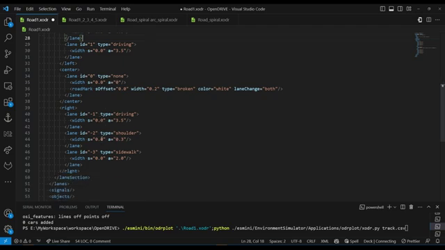
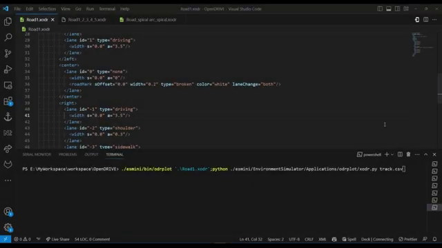
If I want to visualize my open drive file, I can do that by calling Es mini slash bin slash ODR plot and hand over the road 1x ODR file. What this will do is it will create a track do CSV file, which is a pause version of our open drive file. And then I can use a Python script, which is called ODR plus slash X ODR Dopy to visualize that CSV file. And if I run this, I can show that to you.
So you can see this is our road. So we have our three lanes on each side of the center. So this is our sidewalk, this is our driving lane, and in the middle here, you can see the shoulder lane. And what I could do, I could, for example, manipulate my open drive file. So if I would say the lane with the ID one has a width of 6 m, I can save that, I can run that command again. And now you can see that this lane is way bigger.
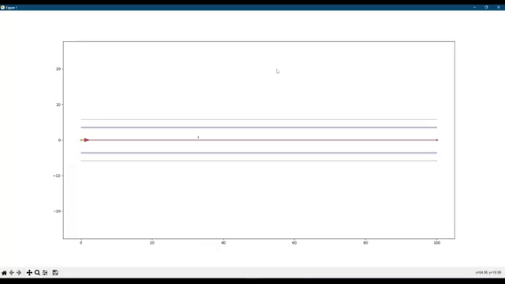
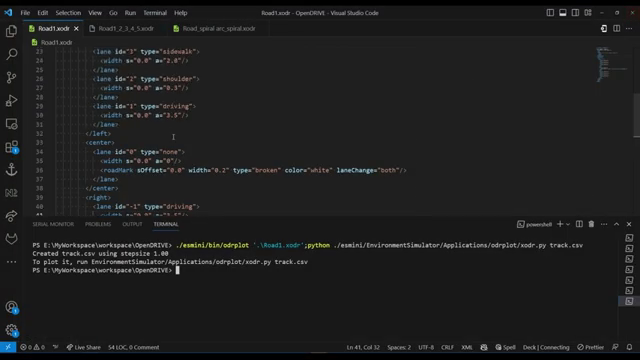
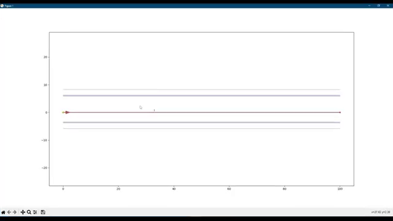
So what you can see also here in that Python plot is the xy coordinates wherever the mouse is hovering. And this will definitely help me when it comes to connecting different roads or line primitives together. So what I can do to get a bit more accuracy, zoom in on a certain point, we're going to connect the next road element. And I can hover over here. And then you will get pretty accurately the xy coordinates for your next road. Obviously, when you use professional tools, you will always get higher accuracy in terms of the coordinates. But as a quick and simple approach to get there, this is one simple way to go.
So viewing our road in a Python plot is nice, but sometimes I want to be a bit more visual. And here, yes, mini provides us with an ODR viewer. And I'm telling this to open a window with a dimension of 1280 by 720. The audio alpha I wanted to visualize is road 1, so that's the one we have here, and I'm telling it to also display me some road features. And I can run this command. And then I'm getting a window. And here I can now see this is my road and we still have the width of the lane with the ID 1 at 6 m.
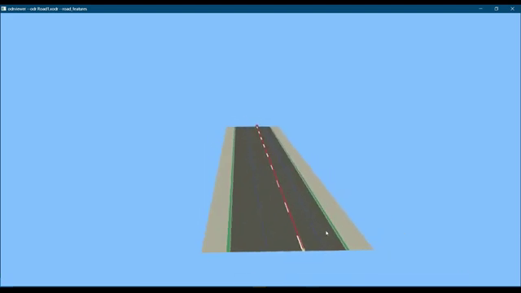
This was 3.5 meters, and here you can now see the shoulder lane and the sidewalk now bit better visualized. And you can never look at it. You can zoom in. So this is a bit nicer.
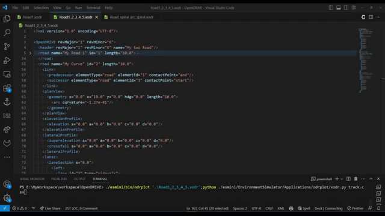
Next, let's have a look at how to connect several roads to each other. So here I've prepared a open drive file with a few roads. It's in the end, there's 5 rows in total. So we have ID one through ID 5. I've gave them different names as my straight elements are called road, So I've enumerated the road elements and I have two curves. And what we can see here is that, for example, the road with the ID 2 has a predecessor and a successor stating the relevant Id's and the individual contact points.
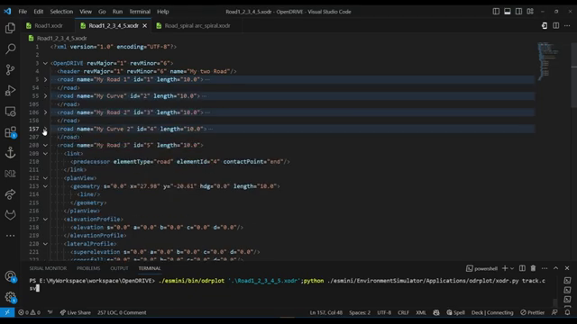
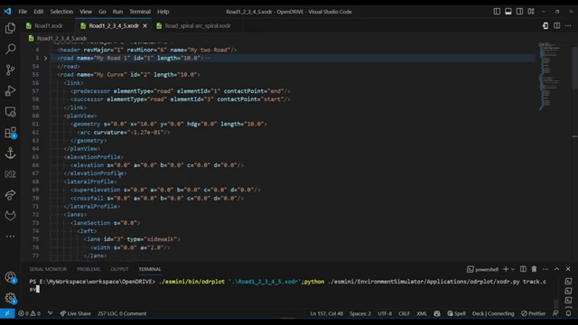
What you can also see is that obviously a curved road has a different geometry element than a straight road. So our curved roads here have a arc as a geometry element versus our straight roads have the line element. Also, each road here has a length of 10 m, which makes the entire road 50 m long. So let's visualize this in our Python plot.
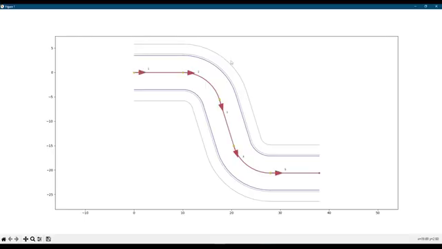
So now here you can see this is our our road and we have a straight element. We have a arc with another straight element with an arc and another straight element. And they are all connected to each other. So once we've viewed everything in our Python plot, we can also view this in our nice simulation. So this is our road, and it looks quite good.
If you paid attention into one of the link videos, you will know that connecting an arc directly to a straight line can cause trouble in your simulation, as this will cause a jump in curvature. To fix this I've prepared a last example where I'm adding a straight line, a spiral and arc, and another spiral to smoothly get in and out of a curve.
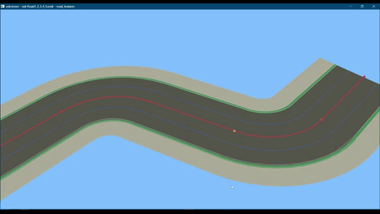
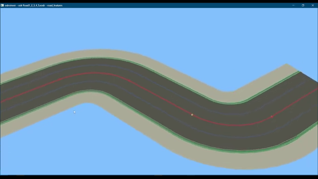
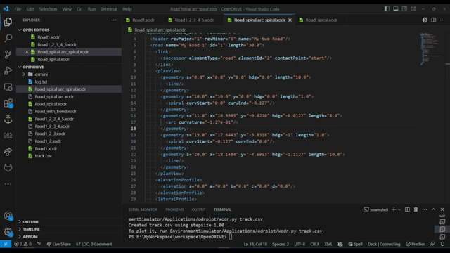
This is the XML representation of the geometry elements stating and forming our smoother turn. So we have a straight line leading us into the turn with a length of 10 m. Then we have 1 m of spiral, pretty much starting our curvature. We can see that we have a starting curvature of 0.0 and an N Cova of -0.127. Then we jump into an arc where we have to adjust the heading a bit. Then we use the same curvature as the spiral ends up with. And to get out of that turn, we have a spiral again, getting us out of the curvature into a straight line, and then followed by a straight line again with a length of another 10 m. So each of those geometry elements add up to 30 m.
And if I want to visualize this on the Python plot, I can do so. And this is how it looks. And you can see this is a really smooth turn. Now let's have a look at how this looks like in our opendrive viewer. And for this, we are going to run the same command as before to get this view. And here it is what you can also see here that we now have a road mark visualization here we didn't have before. So let's have a look on how that works.
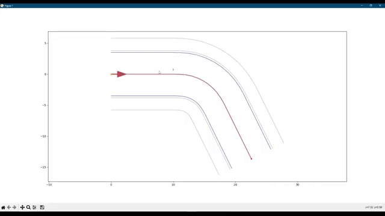
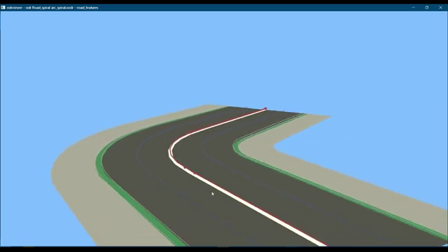
We can jump down here to our center lane. And here I have a road mark definition. I haven't created a video about roadmarks yet, so let me quickly show you how that looks here. So within the lane, we have a element that is called road mark, we define, okay, it starts at s equals 0, it has a width of 20 cm, it's of type soldered for experiment purposes. Letts, change that to broken, then we can say this is of color white and a lane change is allowed on both sides. So if I save this now and run our visualization again, now you can see that our open drive of viewer is visualizing our broken line, there are parameters you can read up in the specification on how to adapt the road marks so you can make the space between, the broken elements smaller. You can the brook make the elements itself smaller with a certain parameters, but as a quick glance, this should, show you how that works, and this is our video for today, so thank you very much for watching and see you the next time.
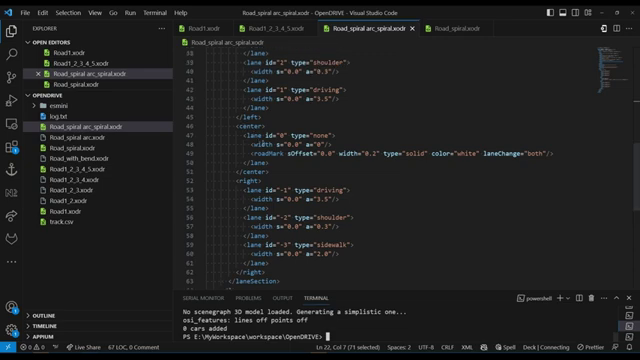
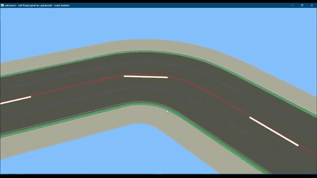
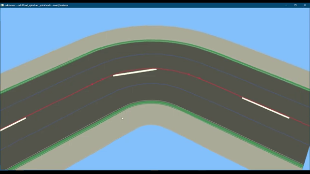